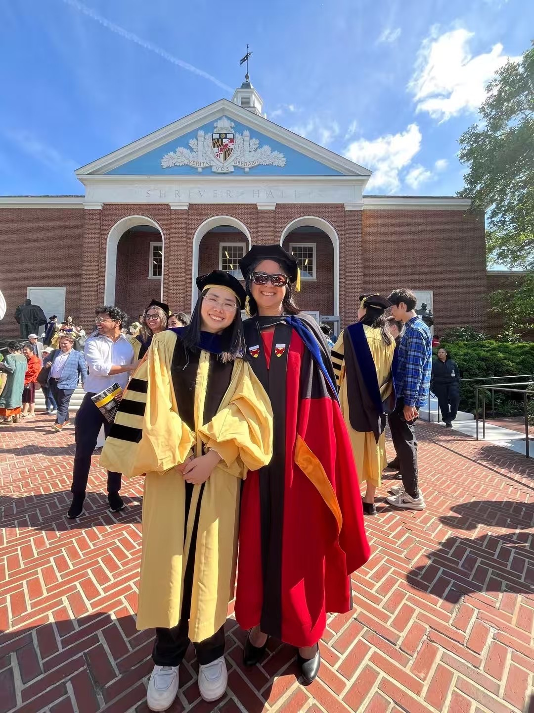
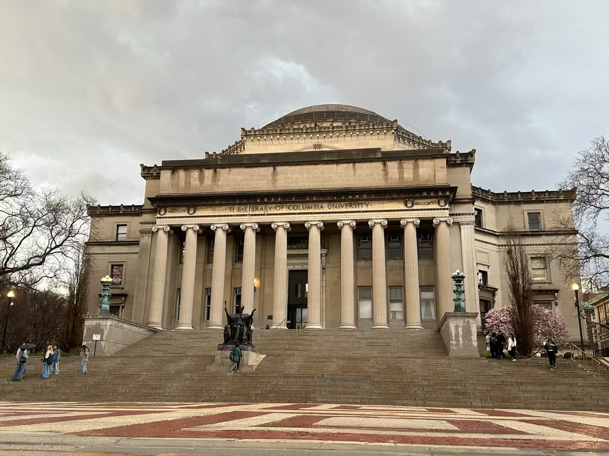
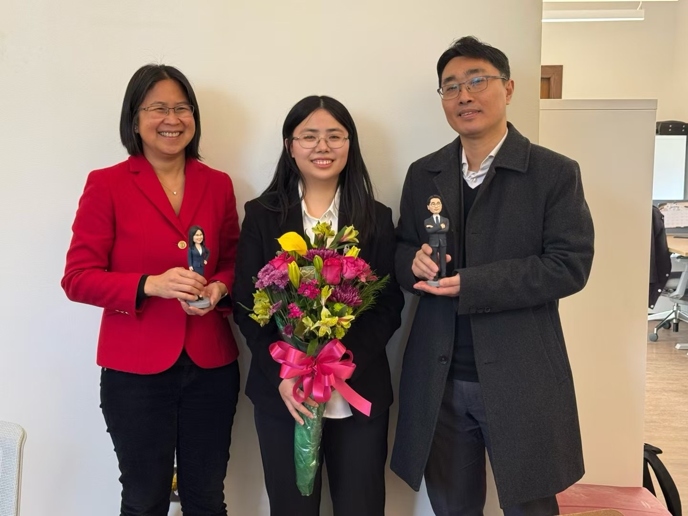

News
- October 2026I gave an oral presentation, “Designing fiber networks for energy storage and dissipation through multi-material 3D printing of viscoelastic polymers,” at the Society of Engineering Science (SES) Annual Technical Meeting at Purdue University, West Lafayette, IN. The talk presented my ongoing work on fiber networks printed from digitally mixed viscoelastic polymers to store and dissipate energy. It was great to reconnect with the mechanics community and to hear so many inspiring talks.
- October 2026Excited to share that my second postdoc work at Columbia is now on arXiv: “Time–temperature–composition equivalence of the viscoelastic behavior through the glass transition of digitally mixed 3D-printed polymers”. Classical time–temperature equivalence (TTE) describes the linear viscoelastic behavior of a polymer by a shift along the frequency axis. In digitally mixed polymers made by multimaterial 3D printing, however, composition does more than shift the curves: it moves and broadens the glass transition and raises the rubbery modulus, so each mixture had to be treated on its own. Here, we establish a much more general time–temperature–composition equivalence (TTCE) for the entire printed family. Its closed form, a stretched exponential in reduced frequency, gives the stiffness and damping of the family across composition, temperature, and frequency. (LinkedIn post)
- September 2026Excited to share that my first postdoc work with Prof. Mary C. Boyce is now on arXiv, after countless rounds of iteration and revision: “Composition-dependent nonlinear viscoelastic–viscoplastic behavior and constitutive framework for digitally mixed polymers spanning the glass transition”. We proposed a unified finite-strain constitutive framework that describes the whole family of digitally mixed polymers for multi-material 3D printing, from rubbery to glassy, and predicts a mixture we held back from calibration. It provides the fundamental tool for understanding these materials and a predictive basis for designing graded multi-material structures. Very proud of this one. Our collaborative paper with Prof. Adrián Buganza-Tepole’s group on data-driven discovery of composition-dependent constitutive models for the same materials is also out. More papers are on the way, stay tuned! (LinkedIn post)
- July 2026I was honored to receive an invitation to give a presentation at the Third Advances in Applied Mechanics Conference (AAM 2027), Madeira, Portugal. I am very grateful for this recognition of my work.
- June 2026I attended the 20th U.S. National Congress of Theoretical and Applied Mechanics (USNCTAM 2026) in Pasadena, CA, and gave an oral presentation, “From Digital Multi-Materials to Bio-Inspired Gradients: Mechanics-Guided Design of Compositionally Mixed Soft Materials.” The work introduces the new concept of time–composition equivalence and develops a unified constitutive framework spanning the full spectrum from elastomeric to glassy behavior. It truly felt like home to be part of such an inspiring mechanics community, and the discussions afterward sparked many new ideas. We are currently wrapping up the related papers — stay tuned!
- June 2026My abstract was accepted for the Society of Engineering Science (SES) Annual Technical Meeting, to be held at Purdue University this October. I look forward to presenting my work and connecting with the mechanics community.
- May 2026Our work, “Thermoviscoelasticity of polydomain liquid crystal elastomers regulated by soft elasticity”, is now available online as a preprint on arXiv.
- April 2026Gave a review lecture in Prof. Mary C. Boyce’s course Mechanics of Elastomeric Materials at Columbia University, walking through the course material from statistical mechanics-based modeling to viscoelasticity and helping the class prepare for the final exam.
- April 2026Delivered a tutorial workshop in Prof. Mary C. Boyce’s course Mechanics of Elastomeric Materials at Columbia University, demonstrating numerical integration of the nonlinear viscoelastic constitutive relations.
- April 2026Happy to be invited back (virtually) to Johns Hopkins for the Mechanics and Materials student seminar panel on job search experiences, where I shared my postdoc search experience along the academic path, alongside perspectives on national labs and industry from other panelists.
- March 2026I was glad to give a guest lecture in Prof. Mary C. Boyce’s course Mechanics of Elastomeric Materials at Columbia University, covering fundamentals of continuum mechanics and rubber elasticity.
- February 2026My abstract for an oral presentation at the 20th U.S. National Congress of Theoretical and Applied Mechanics (USNCTAM 2026) was accepted.
- January 2026Our paper “Combining stretching-dominated and bending-dominated dissipation behavior to optimize energy absorption in liquid crystal elastomer-based lattice structures” was published in Journal of the Mechanics and Physics of Solids.
- January 2026Our paper “The Anisotropic Structure and Mechanical Behavior of Films Extruded From Recycled Polypropylene” was published in Polymer Engineering and Science.
- May 2025I returned to Johns Hopkins University for my doctoral hooding ceremony. Being hooded by my advisor was a very special moment, and it was wonderful to celebrate with friends, labmates, and mentors.

- April 2025I officially joined Columbia University as a Postdoctoral Researcher in Mechanical Engineering.

- February 2025I submitted my Ph.D. dissertation and received official approval from Johns Hopkins University.
- January 2025I successfully defended my Ph.D. dissertation. I am deeply grateful to my committee, collaborators, labmates, and friends for their support throughout the journey.
